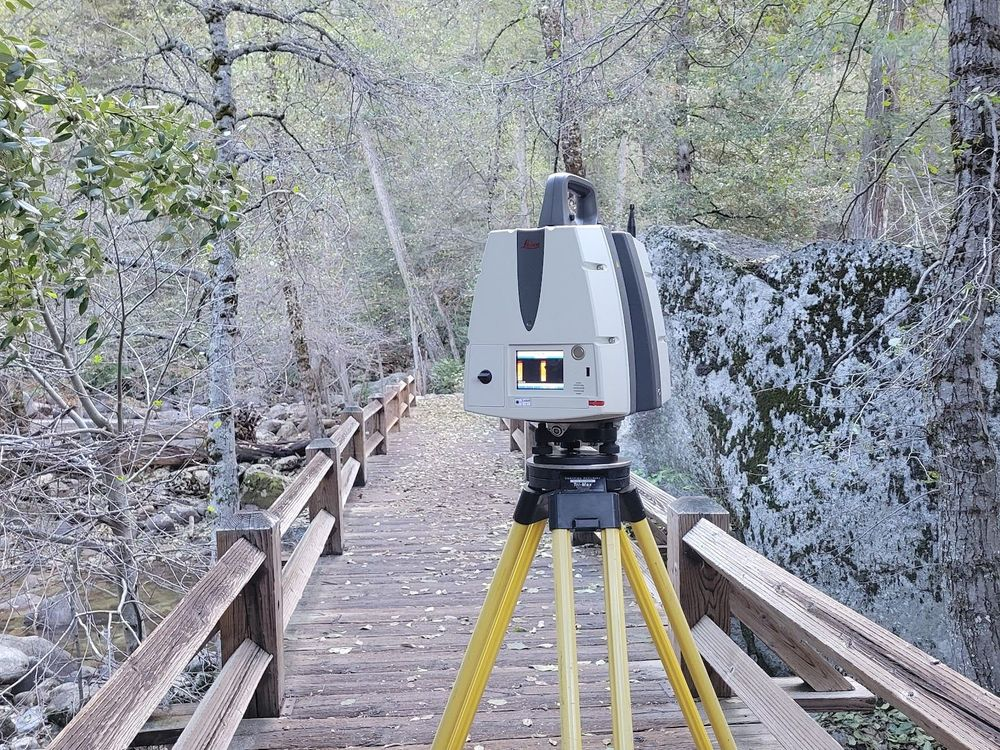

Yosemite National Park · Laser scanning
Vernal Fall to Curry Village
Topographic survey from the top of Vernal Fall down to Lady Franklin Rock, through Happy Isles and along the road back to Curry Village, captured with a Leica laser scanner.

From original 1800s section corners on remote ranches to construction layout held to hundredths of a foot. Licensed land surveyors based in Oakhurst, at Yosemite's South Entrance.
Our work runs from original GLO corners found hundreds of feet from their record position to construction layout that has to land within a hundredth of a foot.



Topographic survey from the top of Vernal Fall down to Lady Franklin Rock, through Happy Isles and along the road back to Curry Village, captured with a Leica laser scanner.

All of the topographic surveying, mapping and construction layout for the Bridalveil Fall trails and overlooks.

Line and grade for an underground decline that's now more than half a mile long and still advancing.

Control and construction layout for two Yosemite wastewater plants, including structural steel and precast buildings, plus structural deformation monitoring with a 0.005 ft (1/16″) reporting threshold.

Record of survey and ALTA survey to support a major ranch transaction, one of many large-acreage ALTAs we've delivered across California.

Original GLO section corners recovered across a thousand acres, then intermediate points set along the property lines to guide new fencing.

By boat to recover old section corners on the far shore, then a drone flight for a 3D model and orthophoto of the site.

Surveys at long-term ecological research sites from California to Oregon and Virginia, for a national science program.
Expert witness work on complicated boundary cases, where the history, the evidence and the math all have to hold up.
Surveying is all four at once, and some days it's a hike, a creek crossing or a boat ride, too. We enjoy that mix.


Efficient and large aren't the same thing. On our jobs, a seasoned licensed land surveyor runs the field work, then runs the calculations and drafts the map. No hand-offs between crew, CAD tech and project manager, and nothing lost in between.
We'd rather grow better than bigger.


We hold the survey records of Jones & Snyder Surveying, the firm that worked here before us.
Every new survey is our own work, under our own contract. Maps from the older files are available as copies of record.
Request a copy of record
Our office is in Oakhurst, at the South Entrance to Yosemite National Park, and we've surveyed some of its best-known places. The work also takes us across California, from Sacramento Valley farmland to the high Sierra and Catalina Island.